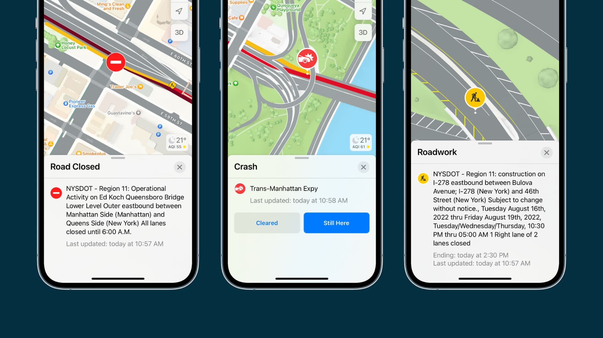

Demo
Working site to showcase the features of Emergen AI.
Map Interface
Mimics the layout and functionality of a traditional GPS navigation system, allowing for familiar interactions and seamless integration with existing workflows.
Alert System
Live alerts from satellite and drone sources provide real-time updates on traffic conditions and incidents.
Disaster Response
Deployed drones and street cameras provide live updates to the road conditions, updating frequently during emergencies and natural disasters.